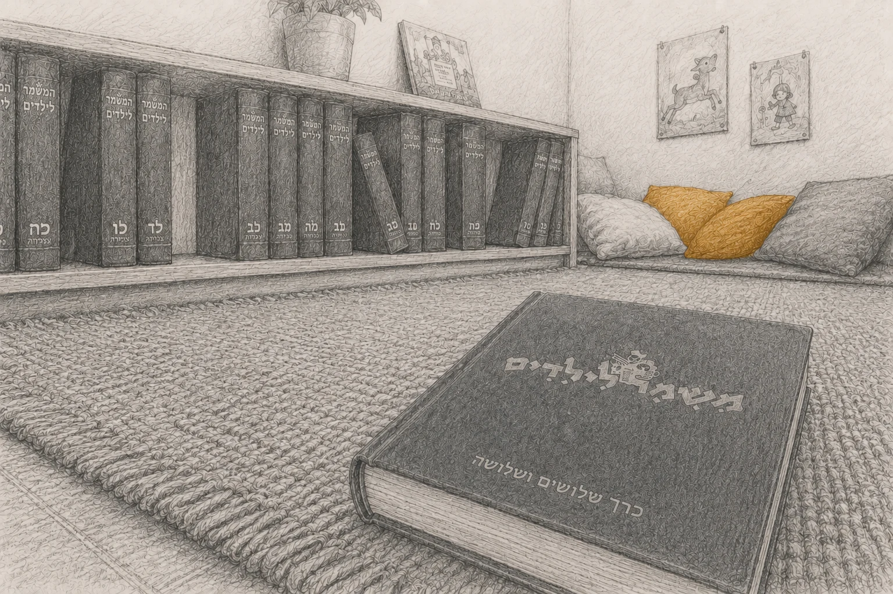

הספרייה המשותפת
להבין יחד את בית הילדים

מרחב משותף: מאמרים שאני מביאה, לצד הסיפורים, הזיכרונות והמחשבות שאתם מבקשים לחלוק.
הסיפור נשלח לרונית בלבד · שום דבר לא מתפרסם ללא אישורכם
בשם מלא, בשם פרטי בלבד או באופן אנונימי · אפשר גם לצרף קובץ
לשליחת סיפור